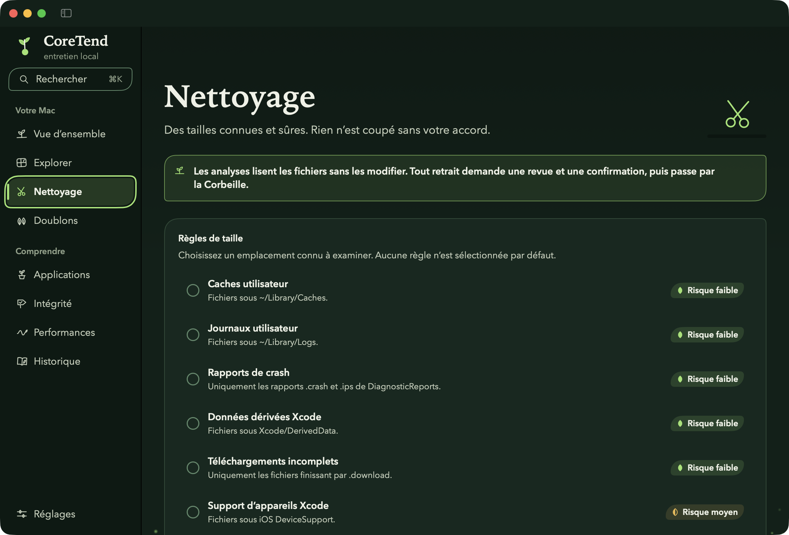
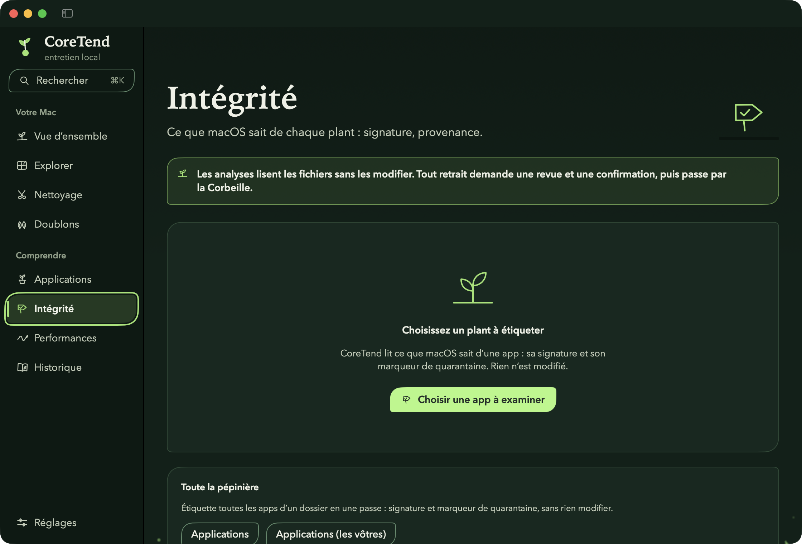
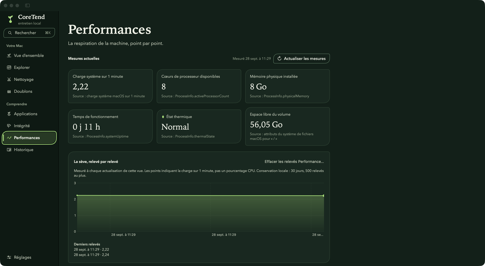

Recherche ⌘K
Allez à n’importe quel outil ou réglage depuis un champ qui naît de la barre latérale.
Fonctionnalités
Chaque outil lit d’abord et explique ce qu’il a mesuré. Déplacer quoi que ce soit demande votre sélection, une revue et une confirmation.
Vue d’ensemble
L’espace libre mesuré par macOS, la bande de sol du volume, les dernières actions de CoreTend et leur raison, et des chemins vers chaque outil.
Explorer
Choisissez un dossier : CoreTend le lit sans y toucher, puis montre chaque fichier et sous-dossier comme une parcelle à sa taille. Entrez dans les sous-dossiers, cherchez, triez, prévisualisez.
Nettoyage
Sept règles pour des lieux connus — caches, journaux, rapports de crash, données Xcode, téléchargements inachevés, sauvegardes iOS — chacune avec son risque dit clairement. Rien n’est sélectionné à votre place.

Doublons
Copies exactes trouvées par leur contenu, avec l’espace qu’en garder une seule libérerait. Vous choisissez l’exemplaire gardé, qui ne peut jamais être déplacé. Les images proches sont montrées par paires, à vous d’en juger.
Applications
Chaque app d’un dossier avec son icône, sa version et sa taille réelle ; tri par taille ; fichiers autour d’une app par correspondance de nom, jamais présentés comme une preuve. Déplacez un bundle vers la Corbeille après revue.
Intégrité
Ce que macOS enregistre d’une app — signature, marqueur de quarantaine — une étiquette par signal, ou tout un dossier en une passe. Des signaux, jamais un verdict de sûreté.

Performances
Charge système, mémoire utilisée, état thermique et plus, chacun avec sa source, et la charge tracée dans le temps. Les relevés se font quand vous regardez, jamais en arrière-plan.

Historique
Tout ce qui a été observé et déplacé, une page par jour. Cherchez, exportez en CSV ou JSON, ou effacez — il reste sur votre Mac.
Allez à n’importe quel outil ou réglage depuis un champ qui naît de la barre latérale.
En option : espace libre, mémoire et charge d’un coup d’œil, et chaque outil à un clic.
Importez les préférences et exclusions reconnues d’une copie 1.x ; la source reste intacte.
Un outil en ligne de commande, en lecture seule, analyse le dossier indiqué et lit l’historique.